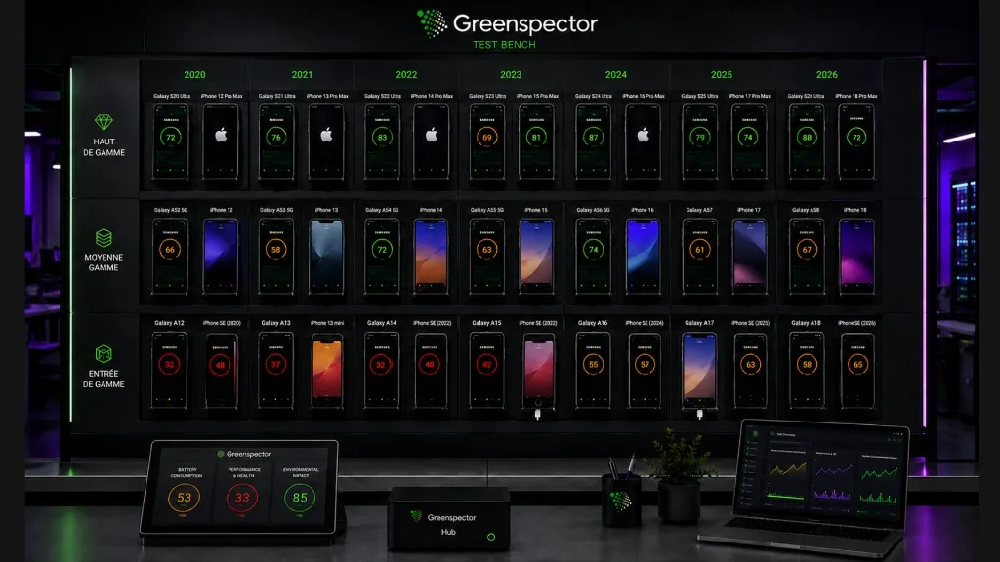

Artificial intelligence is becoming an essential technology for adding new features to mobile apps. Personalized recommendations, conversational assistants, automatic translation: the use cases are endless. But this shift raises a crucial question for the quality of digital products: what is the real impact of AI on battery consumption and performance? And above all, how can you keep that impact under control so every user gets a smooth experience in your app?
AI in Android apps
Google now offers several ways to bring generative AI into Android apps. On one side, cloud models such as the Gemini API provide advanced capabilities by running the work on remote servers. On the other, on-device models — notably Gemini Nano and the ML Kit GenAI APIs — run directly on the user's device.
The on-device approach has clear advantages: data privacy, offline use, and faster response. It can also have a significant energy cost. According to a study we ran in 2025, local AI models consume on average 29 times more energy than a reply from the remote ChatGPT model. That striking ratio comes from the intensity of the calculations on a mobile processor, whose resources are limited compared with a data center.
For product teams, this calls for particular care when designing user journeys enriched with AI. Every local request, every piece of generated content, and every image process puts heavy demand on the CPU and the battery. The battery impact of AI is therefore not a theoretical topic, but a new technical constraint to take into account.
Real risks for the user experience
Adding generative AI features to a user journey without first checking the consequences can lead to problems of varying severity. First, as we have just seen, excessive battery use degrades the user experience and can lead people to uninstall the app. Users are particularly sensitive to this, especially on entry-level and mid-range devices.
The second risk is performance. As the official Android performance documentation points out, poor memory and CPU management can cause slowdowns, overheating, or even crashes. Resource-hungry local AI models amplify these risks if they are not integrated carefully. There is a real social issue here (or a business one, depending on your app and your point of view): how much performance degradation do you consider acceptable on older or less powerful devices?
Finally, the diversity of the Android installed base makes the situation harder. Without measurements of energy use, resource use, and performance across different models, it is impossible to predict the quality of the user experience for everyone.
Measure to anticipate defects
Given these issues, an objective measurement of energy consumption becomes essential before release. Estimates guessed from an IDE are no longer enough. Developers need precise data to find the friction points and decide with the product owner how to optimize the journey.
This measurement of AI impact on an Android app requires a controlled test environment that faithfully reproduces real conditions of use. Measurement on real devices — not emulators — is required in order to capture battery consumption, CPU use, memory use, and device temperature, among other signals, that result from the overall load on the smartphone.
Measurement tools also need fine granularity, so each step of a user journey can be analyzed. For example, how much battery does a local AI text generation use? What is the performance impact of a series of requests to a remote AI? These questions need quantified, step-by-step answers to guide optimization decisions.
How to measure the impact
Several tools can analyze the energy consumption of Android apps, each with its own specifics. Battery Historian, developed by Google, visualizes batterystats data and can detect energy leaks, but the app has to run for several minutes, which complicates the analysis. The developer tools built into Android Studio are a first step for some metrics (CPU, memory, rendering), but their estimates do not replace an energy measurement in real conditions. The Power Profiler, meanwhile, depends on the information device makers choose to implement... or not.
For automated, repeatable tests of complete user journeys, Greenspector Studio takes a different approach. The solution relies on a measurement bench made of real Android and iOS devices, fitted with external hardware probes, with laboratory-like precision on the order of µAh/s every 200 ms. That precision makes it possible to analyze each step throughout the user journey and see exactly where the hot spots are.
Automated tests, prepared with no-code, run on different smartphone models covering a range of prices, ages, and performance levels. Measurement reports identify the most energy-hungry steps, CPU and RAM consumption peaks, and other indicators. This approach makes it possible to detect performance defects quickly and to check that fixes actually work. This solution — the only one on the market — gives digital teams a rigorous measurement environment to choose between local AI and cloud AI, or no AI at all, based on the real impact on the user experience.

Conclusion
Bringing generative AI into Android apps opens up interesting possibilities, but it also imposes new constraints. Measuring the consequences for battery consumption and performance before release is not optional: it is necessary. Android tools provide a first set of signals, but only precise, rigorous measurement tools — Greenspector Studio, of course — allow product and engineering teams to anticipate difficulties and offer an optimal experience (or at least to be aware of the limits of the experience they are offering) to the wide variety of their Android users, rather than leaving a large share of them behind.